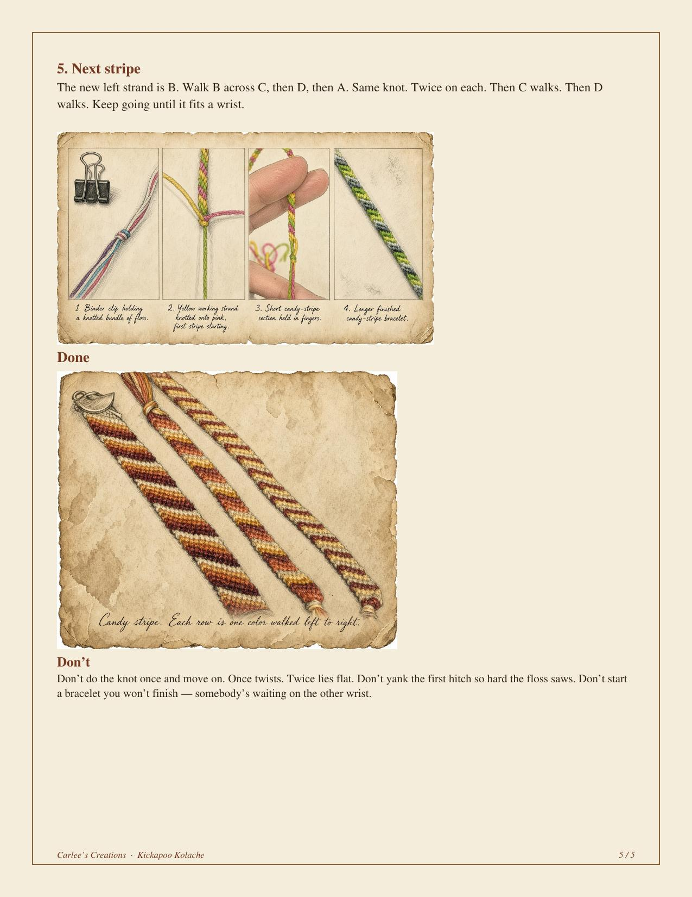

Daily essentials
Almanac tip, joke, scripture, and This Day in History — updated daily.
Brownsboro & Chandler. Neighbors first.
Digital Edition · Est. 2026
Almanac tip, joke, scripture, and This Day in History — updated daily.
Email a Brownsboro–Chandler tip: kickapookolache@gmail.com
Loading local briefs…
One featured Brownsboro–Chandler partner at a time. Request a listing to be considered.
Want the spotlight? Listings are reviewed before posting. Get listed
Loading live MaxPreps links…
City meetings, notices, and links…
Loading Brownsboro official links…
School headlines, calendar, and ParentSquare…
Editor civic notes appear here when filed.
Homemade Four-Point Spear — Four points beat one. You don’t have to hit perfect. You pin.

Friendship Bracelets — Candy stripe. Four colors. One knot, done twice, walked left to right. Make two. Keep one. Give one.
Neighbor column pitches welcome — reviewed before posting. Pitch a column / Request a column slot
Veteran-owned websites & IT for East Texas shops. Brownsboro–Chandler neighbors welcome.
Local contractors: request a directory card — reviewed before posting. Request a listing